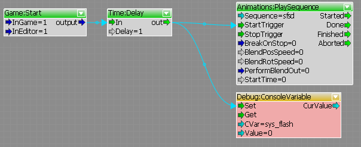
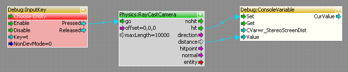
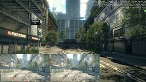
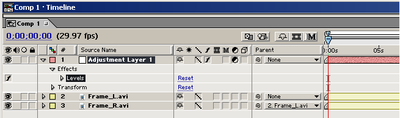

Overview
This tutorial will educate the reader on how to output stereoscopic videos from CryENGINE 3.
Steps to capture Stereo3D streams
1. Create a user.cfg with the following:
r_width = 1280
r_height = 720
r_stereoMode = 2
r_stereoOutput = 4 -- side by side in this case
- Recording must be done in game mode.
- If using a trackview sequence, set it to playback in the engine, here is an example flowgraph:

2. Convergence is fixed at 0.14m by default, here is a quick flowgraph example that sets the convergence at what the player is looking at (what is in focus):

3. Set the following CVars to begin the capture: capture_misc_render_buffers 2 and capture_frames 1.
4. To check the virtual cameras without 3d hardware, use the following CVar: r_ShowRenderTarget 26. Which will look like this:

Dealing with the output
- Download ffmpeg and add it to the system path environment variable.
- In the CaptureOutput folder you will see a bunch of frames with an _L and _R suffix. These should be separated into folders for ease of use.
Typically you would put the _L images into a "Left" folder and the _R into a "Right" folder. - If you edit multiple videos, it's easiest to set an adjustment layer above the footage in whatever kind of editing app you use. Parent one eye to the other and just turn it off; don't worry about it, edit like you would a 2d video.
You can also edit the TGA streams themselves now they are renamed and placed in L and R folders; but output them to the L and R videos before moving on.
- Download Stereo Movie Maker
- Click File -> Open Left/Right movies...
- Check it with anaglyph or 3d hardware if you got it
- Click File -> Save Stereo Movie... Save as side by side or however you need it.